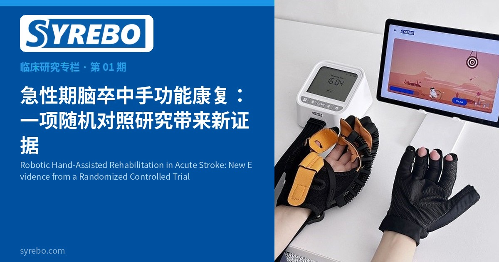

Syrebo नैदानिक अनुसंधान कॉलम
साक्ष्य-आधारित · पुनर्वास रोबोट दस्ताना नैदानिक अनुसंधान व्याख्या


स्ट्रोक के बाद हाथ अक्सर सबसे कठिन रूप से ठीक होने वाला अंग होता है: कप पकड़ना, शर्ट के बटन लगाना या स्वतंत्र रूप से खाना, ये सभी दैनिक चुनौतियाँ बन सकते हैं। विज्ञान-आधारित पुनर्वास जितनी जल्दी शुरू होगा, ठीक होने का अवसर उतना ही मूल्यवान होगा।
Scientific Reports (2026) में प्रकाशित एक यादृच्छिक नियंत्रित परीक्षण ने नए साक्ष्य जोड़े हैं। तुर्की के NP Brain Hospital में किए गए इस अध्ययन में तीव्र स्ट्रोक के 30 रोगियों को भर्ती किया गया और यादृच्छिक रूप से दो समूहों में बाँटा गया। रोबोटिक हाथ पुनर्वास समूह को पारंपरिक न्यूरोडेवलपमेंटल थेरेपी (NT) के अतिरिक्त SYREBO रोबोटिक हाथ-सहायता प्रशिक्षण सप्ताह में तीन बार, 8 सप्ताह तक दिया गया; नियंत्रण समूह को केवल NT दिया गया।
रोबोटिक हाथ समूह ने तीन प्रमुख परिणामों में नियंत्रण समूह की तुलना में अधिक सुधार दिखाया: Nine-Hole Peg Test (हाथ की सूक्ष्म दक्षता), ABILHAND प्रश्नावली (दोनों हाथों की दैनिक गतिविधियाँ) और Barthel Index (दैनिक जीवन में स्वतंत्रता)। दूसरे शब्दों में, तीव्र चरण में पारंपरिक पुनर्वास में रोबोटिक हाथ प्रशिक्षण जोड़ने से रोगियों को अपने हाथों का उपयोग जल्दी वापस पाने में मदद मिल सकती है।
सीमाएँ: छोटा नमूना (n=30); स्पैस्टिसिटी (spasticity) परिणामों में समूहों के बीच कोई महत्वपूर्ण अंतर नहीं था।